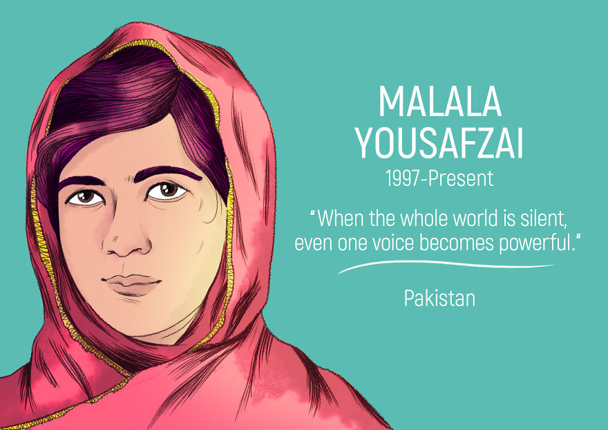
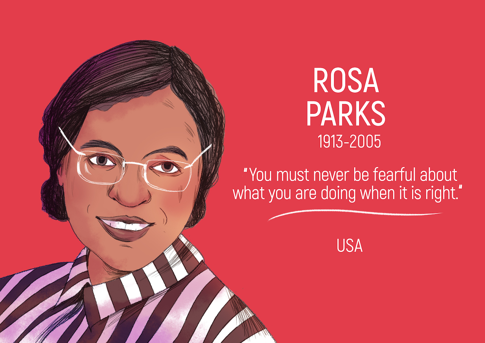
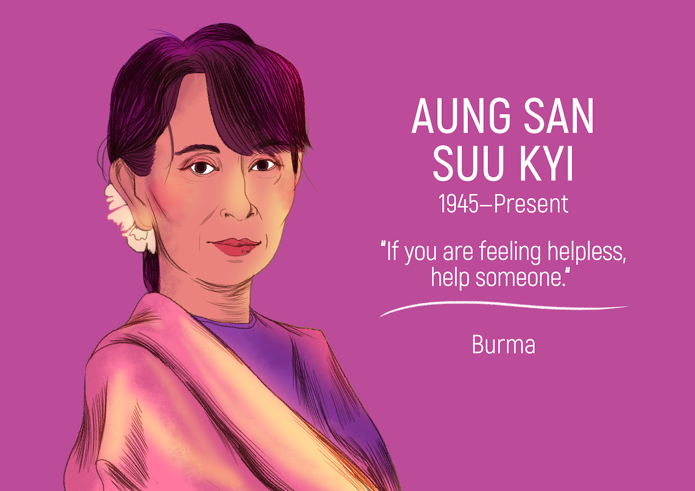

When the Taliban took control of the Swat Valley, one girl spoke out, refused to be silenced and fought for her right
to an education. With her father, Malala yousafzai established malala fund, a charity dedicated to giving every girl an
opportunity to achieve a future she chooses.

Parks rejected bus driver James F. Blake's order to relinquish her seat in the "colored section" to a white passenger,
after the whites-only section was filled. The National Association for the Advancement of Colored People (NAACP) believed
that she was the best candidate for seeing through a court challenge after her arrest for civil disobedience in violating
Alabama segregation laws

Ms Suu Kyi, now 73, spent much of her time between 1989 and 2010 in some form of detention because of her efforts to
bring democracy to then military-ruled Myanmar (also known as Burma). She led the National League for Democracy (NLD) to
a majority win in Myanmar's first openly-contested election in 25 years in November 2015. The win came five years to the day
since she was released from 15 years of house arrest.